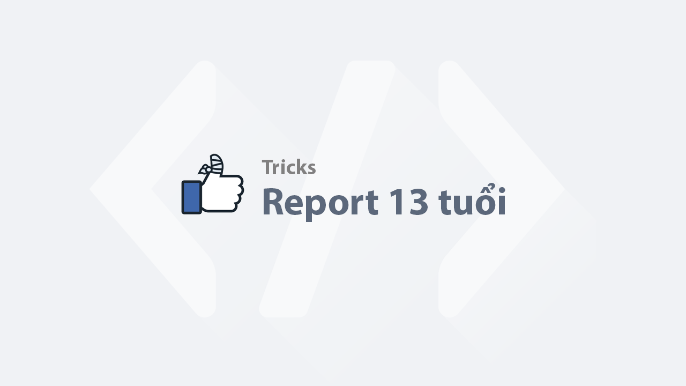

Report 13 tuổi - Hướng dẫn chi tiết
Bài viết này hướng dẫn chi tiết cách bạn có thể báo cáo tài khoản Facebook chưa đủ tuổi. Đây là quy trình hợp pháp mà Facebook khuyến nghị.
Nội dung chính
Bước 1 : Fake ip Spain
Bước 2 : Truy cập và đường link contact sau của Facebook : https://www.facebook.com/help/contact/209046679279097 https://www.facebook.com/help/contact/1408156889442791
Bước 3 : điền đầy đủ form (chọn 9 tuổi)
Bước 4 : Thần chú : Estimado equipo de soporte de Facebook, He identificado que la cuenta con el siguiente enlace de perfil: [https://www.facebook.com/123] pertenece a una persona que no cumple con los requisitos de edad mínima para usar Facebook, según las políticas de la plataforma. Solicito que revisen esta cuenta y tomen las medidas correspondientes para desactivarla de acuerdo con sus políticas. Agradezco su pronta respuesta y atención a este asunto. Atentamente, [Su nombre]
Bạn chỉ cần thay thế [https://www.facebook.com/123] bằng liên kết profile của người mà bạn muốn báo cáo và [Su nombre] bằng tên của bạn.
Sau khi hoàn thành, Facebook sẽ gửi thông báo xác nhận cho bạn. Thời gian xử lý thường kéo dài 24-48 giờ.